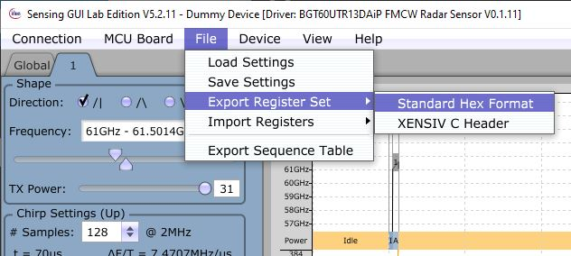

Recorder
We provide a recorder tool to record data with sensors that are supported by ifxdaq.
It can be started from the command line (after you installed ifxdaq):
ifxdaq recorder
Button |
Functionality |
|---|---|
Discover connected devices. |
|
Start the recording. The window might freeze for a short time - this is a known limitation. |
|
Stop the recording. |
|
Open a file dialog to select sensor configurations. |
|
View the current sensor configuration. |
Command line help
If you want to enable specific options, you find them within the -h/--help menu:
ifxdaq recorder --help
Usage: ifxdaq recorder [OPTIONS]
Recorder tool.
Options:
--config-file PATH Configuration file. [default: config.yaml]
--vis / --no-vis Enable visualizations. (Warning: This can lead to frame drops.) [default: vis]
--webcam / --no-webcam Enable webcams. (Warning: This can cause side effects on other cameras used.)
[default: no-webcam]
--log-level [DEBUG|INFO|WARN|ERROR]
Log level. [default: INFO]
-h, --help Show this message and exit. [default: False]
Radar configuration files
JSON configuration - Find more details in the RDK documentation.
Exemplary JSON configuration file.{ "device_config": { "fmcw_single_shape": { "rx_antennas": [ 1 ], "tx_antennas": [ 1 ], "tx_power_level": 31, "if_gain_dB": 48, "start_frequency_Hz": 60.5e9, "end_frequency_Hz": 61.5e9, "num_chirps_per_frame": 64, "num_samples_per_chirp": 128, "chirp_repetition_time_s": 391.55e-6, "frame_repetition_time_s": 100e-3, "hp_cutoff_Hz": 80e3, "aaf_cutoff_Hz": 500e3, "sample_rate_Hz": 2e6, "mimo_mode": "off" } } }
Register lists - Register lists can be exported via SensingGUI.
